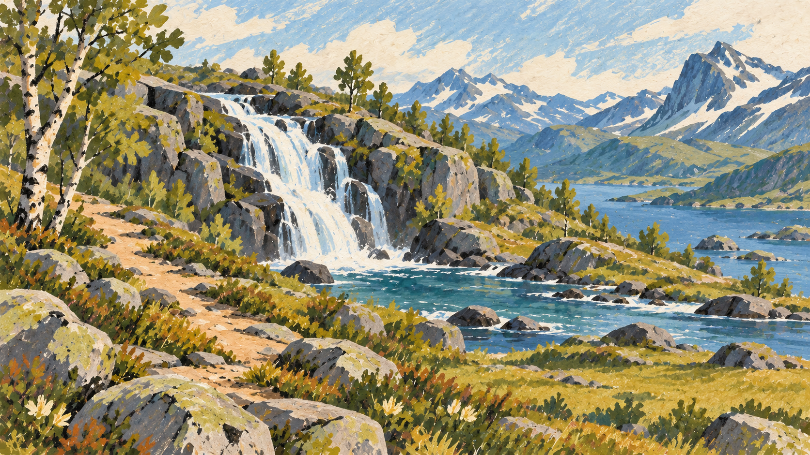
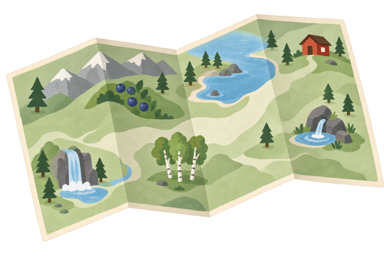

Tappa 1La Cascata di Lavvu · 14 km

10:30ora
100energia
72morale
16ferie
590 €soldi
Vento leggero
zaino 9,4 kg · 2,5 km/hpasti 3 barrette 4 gas 0 cerotti 2 calze 1
Il fragore copre ogni altro rumore.
La Cascata di Lavvu
Il sentiero passa accanto alla pozza. L’acqua è così limpida che sembra meno fredda di quanto sia.
Riempire la borraccia+5 min · recuperi energia
Proseguire senza fermarsinessun costo immediato